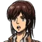
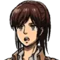
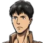
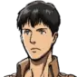

 



EREN JEAGER
Estado: vivo
Edad: 16
Eren jeager es secuestrado en esta temporada por los titanes acorazado y colosal, su odio hacia los titanes aumenta tras la traición de Reiner y Bertolt. Al final de la temporada Eren descubre que tiene la habilidad de controlar titanes, sin embargo no sabe utilizarla a voluntad.
MIKASA ACKERMAN
Estado: viva
Edad: 16
Mikasa Ackerman durante esta temporada intentará rescatar a Eren del secuestro demostrando que es su prioridad, incluso si debe lastimar o asesinar a otros compañeros para lograrlo.
ARMIN ARLERT
Estado: vivo
Edad: 16
Armin Arlert
LEVI ACKERMAN
Estado: vivo
Edad: +30
Levi Ackerman
ERWIN SMITH
Estado: vivo
Edad: +30
Erwin Smith será el comandante de la operación para rescatar a Eren. En esta demuestra una vez más su determinación y gran liderazgo asi como reafirma su creencia de que Eren es la clave para el futuro de la humanidad. Durante la operación de rescate Erwin pierde uno de sus brazos.
HANGE ZOE
Estado: viva
Edad: Desconocida
Hange Zoe muestra especial interes en un sacerdote que sabía cosas respecto a la historia de los titanes pero se negaba a compartirlas. Durante la temporada Hange buscará descubrir la verdad detras de la religión y las murallas.
Jean kirstein
Estado: vivo
Edad: 16
Jean kirstein
SASHA BLOUSE
Estado: viva
Edad: 17
Sasha Blouse en esta temporada irá a su pueblo natal donde se enfrenta a un titán y salva a una niña.
CONNIE SPRINGER
Estado: vivo
Edad: 16
Connie Springer visita su pueblo natal en esta temporada solo para descubrirlo completamente en ruinas, aalí noencuentra a nadie salvo a un titán incapaz de moverse, el cual tiene un aspecto similar a su madre. Luego se reunirá con algunos de sus compañeros en un castillo antiguo, donde seran rodeados por titanes.
REINER BRAUN
Estado: vivo
Edad: 18
Reiner Braun forma parte del grupo de soldados atrapados en un castillo rodeado de titanes. Más adelante revela que él es el titán acorazado y le pide a Eren que lo acompañe a su ciudad natal, peroeste se niega por lo que lo secuestran. Al final de la temporada se ve como varios titanes lo atacan al mismo tiempo.
BERTOLT HOOVER
Estado: vivo
Edad: 17
Bertolt Hoover revela en esta temporada que él es el titán colosal, tras esto secuestra a Eren y a Ymir. Junto con Reiner intentan escapar de la isla aunque él muestra interés por volver a buscar a Annie, quien quedó en un capullo endurecido en manos de la milicai.
KRISTA LENZ/HISTORIA REISS
Estado: viva
Edad: 16
Krista Lenz se hace llamar por ese nombre al comienzo de la temporada, sin embargo tras unas palabras de Ymir revela que su verdadero nombre es Historia Reiss. Más adelante cuando Ymir es secuestrada hace todo lo posible por rescatarla, y en caso de no ser posible muestra su deseo de igualmente permanecer a su lado. Finalmente acepta la decisión de Ymir de irse con Reiner y Bertolt mientras ella permanece con la humanidad en las murallas.
YMIR
Estado: viva
Edad: 17
Ymir se encuentra entre los reclutas encerrados en el castillo, tras verse rodeados por titanes, y al ver que Krista se encuentra en peligro, Ymir revela que puede transformarse en titán, utilizando este poder para salvar a los demás.Se nos cuentasuhistoria y como adquierió los poderes de titán. Luego es secuestrada por Reiner y Bertolt con quienes decide colaborar y a quienes finalmente acompañay ayuda, dejando atrás a Historia.